סיפורי תנאים וגדולי ישראל
סיפורי התנאים במצגות ובכתב, סיפורי צדיקים ואמונה וקטלוגי סיפורים
147 פריטים
סיפורי התנאים (70)
אינדקס משחקי תורה – 52 חידונים על גדולי התנאים (כיתה ג׳)
52 משחקי חידון אינטראקטיביים על 12 תנאים וצדיקים: רבי טרפון, רבי עקיבא, חוני המעגל, הלל ושמאי ועוד – 624 שאלות
התנאים - סיפורים ומצגות
גדולי ישראל – סיפורים 📚 ספריית תוכן דיגיטלית גדולי ישראל סיפורים מסע אל חיי חכמי ישראל לדורותיהם ✡️ 🏠 כניסה לד…
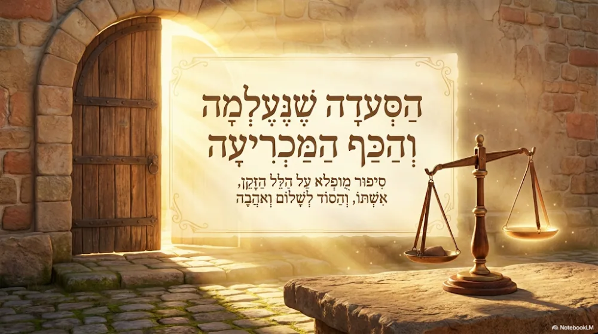
הלל הזקן - לדון לכף זכות
הלל ושמאי - תורה על רגל אחת
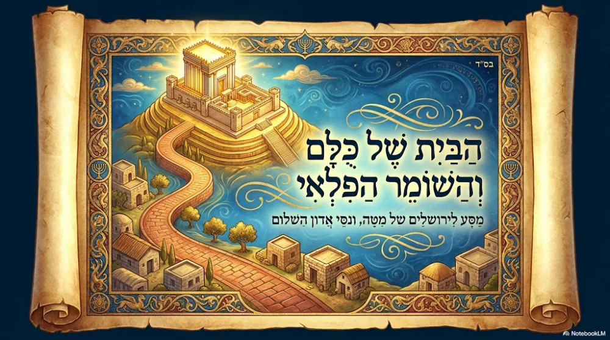
בית המקדש
שמאי הזקן
הלל שכיבד את העני
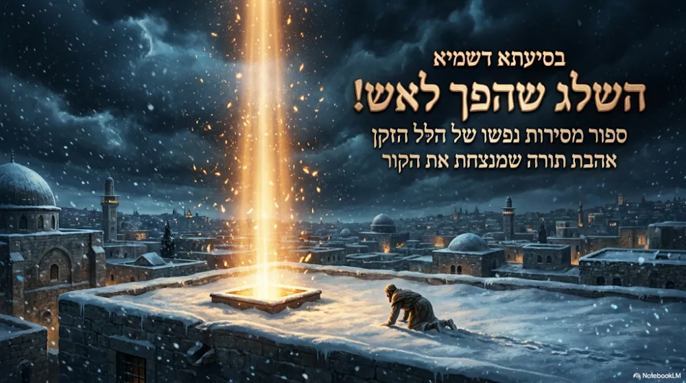
הלל על גג המקדש
ב"ש וב"ה סוד הקול מן השמים
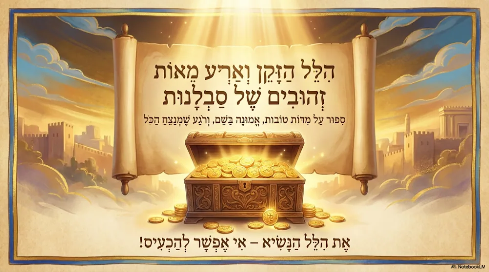
הלל הזקן סבלנות
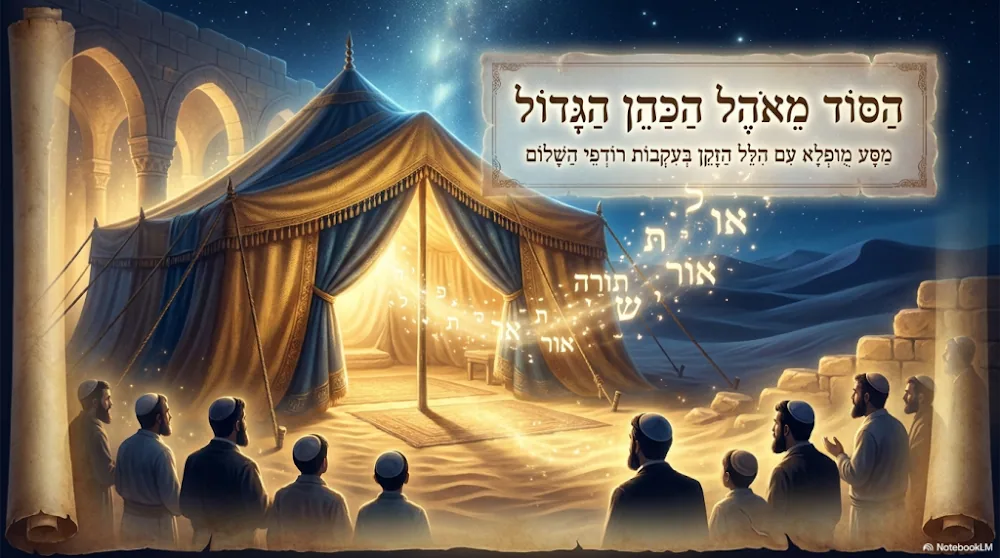
הלל ואהרן הכהן
רבי צדוק ובנו - הלב שצם והכד המלא
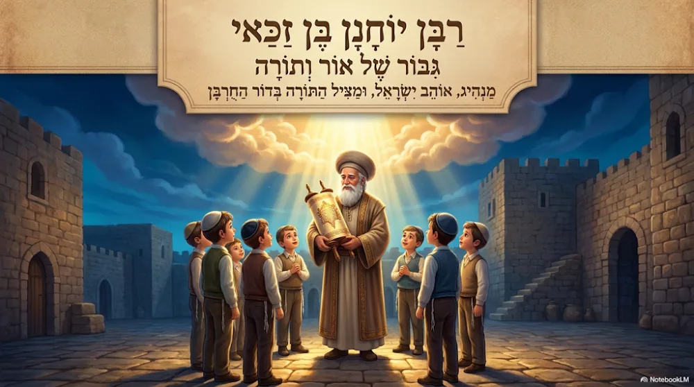
רבן יוחנן בן זכאי - מציל התורה
יוחנן בן זכאי
יוחנן בן זכאי מציל התורה
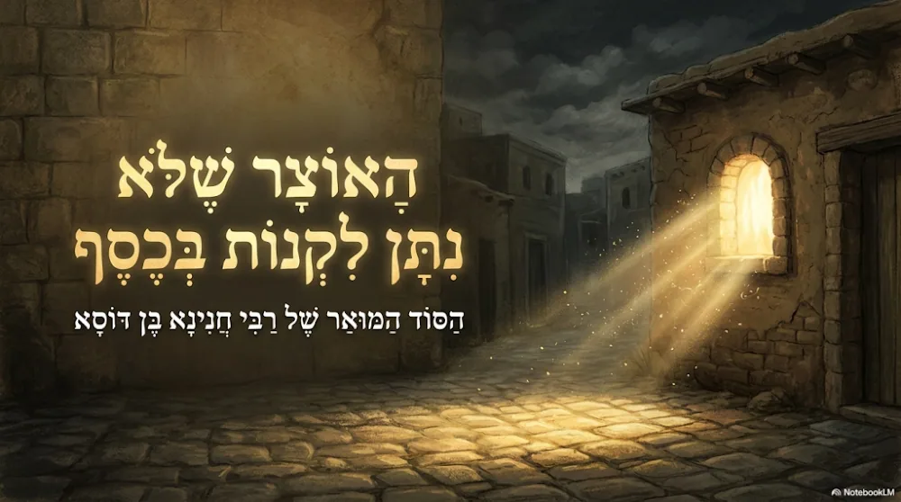
חנינא בן דוסא - קב חרובים
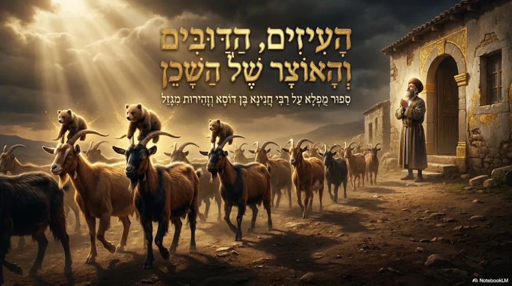
חנינא בן דוסא והעיזים
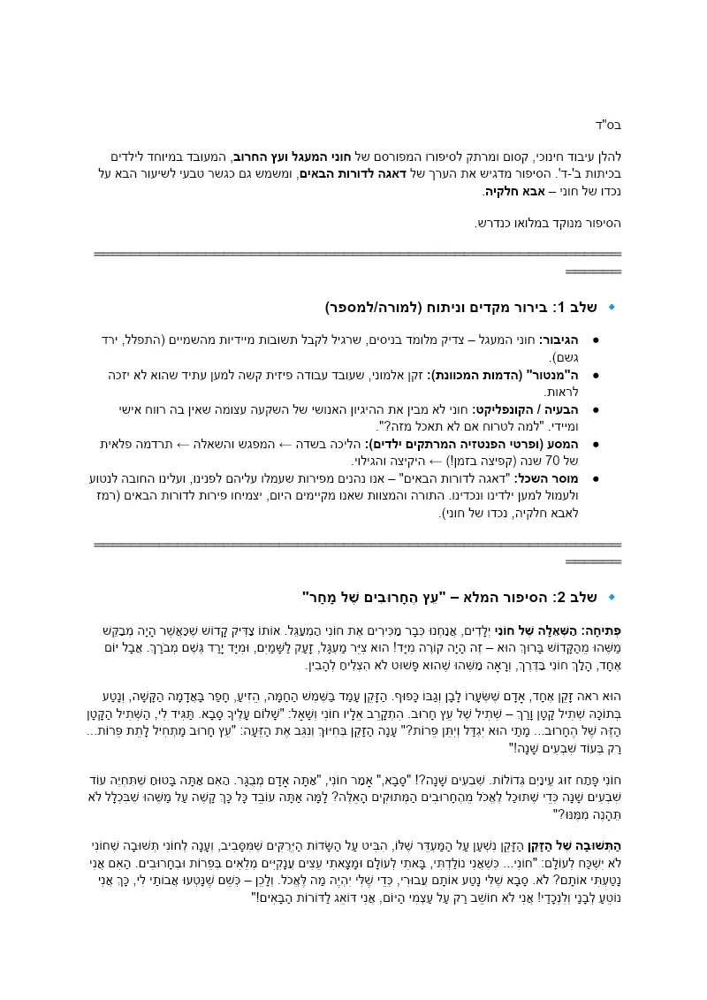
הסיפורים במלואם
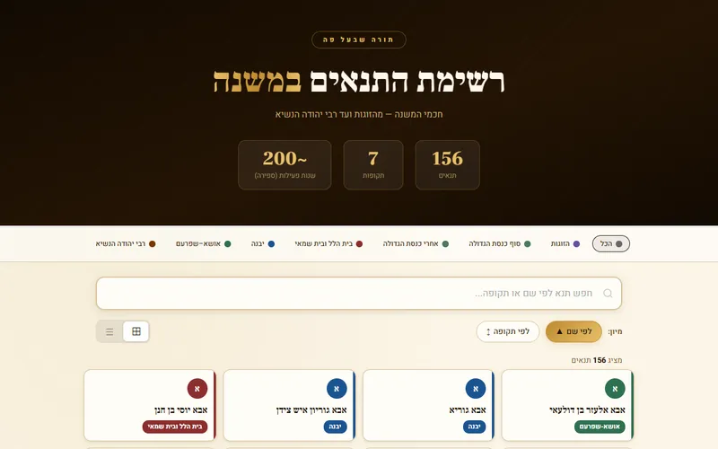
רשימת התנאים לפי הדורות
רשימת התנאים במשנה תורה שבעל פה רשימת התנאים במשנה חכמי המשנה — מהזוגות ועד רבי יהודה הנשיא 156 תנאים 7 תקופות…
משחק על רבי יוחנן בן זכאי
מי אמר זאת? | רבן יוחנן בן זכאי 🕎 מי אמר זאת? משחק ההתאמה | רבן יוחנן בן זכאי ניקוד 0 רצף ✨ 0 לבבות ❤️ ❤️ ❤️ ה…
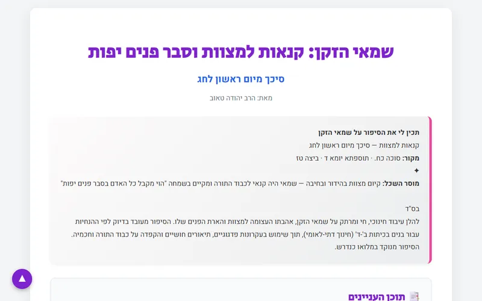
שמאי הזקן - קנאות למצוות
שמאי הזקן: קנאות למצוות וסבר פנים יפות שמאי הזקן: קנאות למצוות וסבר פנים יפות סיכך מיום ראשון לחג מאת: הרב יהו…
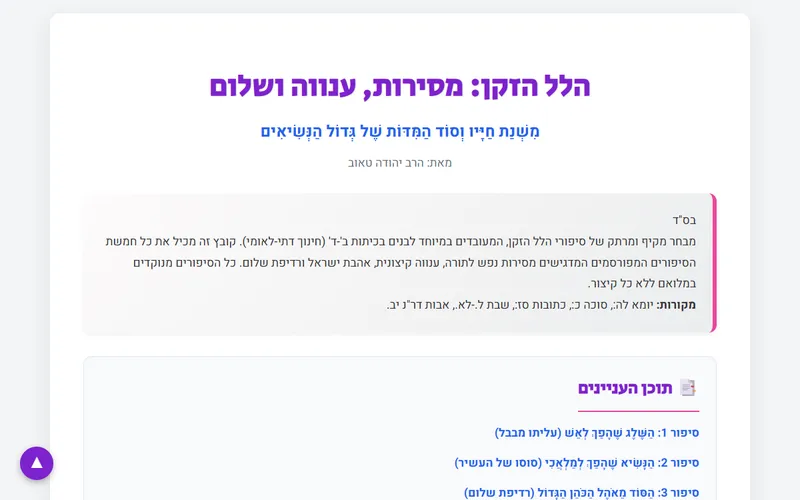
הלל הזקן: מסירות, ענווה ושלום
מִשְׁנַת חַיָּיו וְסוֹד הַמִּדּוֹת שֶׁל גְּדוֹל הַנְּשִׂיאִים הלל הזקן: מסירות, ענווה ושלום מִשְׁנַת חַיָּיו ו…
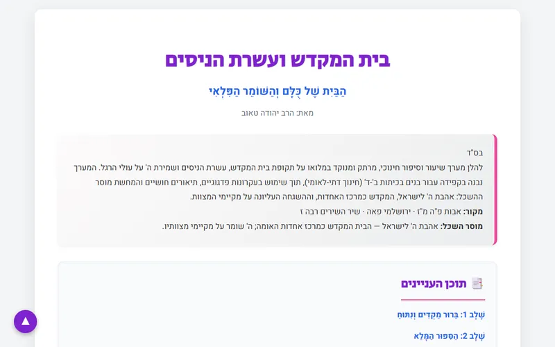
בית המקדש ועשרת הניסים
הַבַּיִת שֶׁל כֻּלָּם וְהַשּׁוֹמֵר הַפִּלְאִי מאת: הרב יהודה טאוב בס"ד להלן מערך שיעור וסיפור חינוכי, מרתק ומנ…
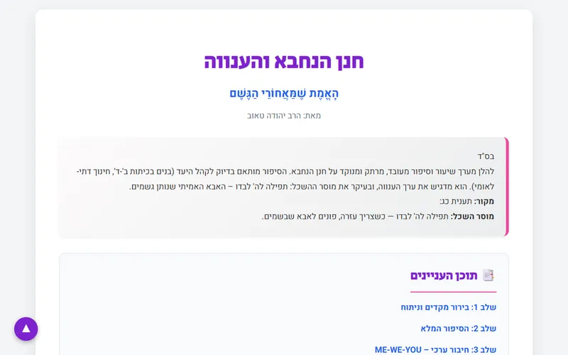
חנן הנחבא והענווה
הָאֱמֶת שֶׁמֵּאֲחוֹרֵי הַגֶּשֶׁם חנן הנחבא והענווה הָאֱמֶת שֶׁמֵּאֲחוֹרֵי הַגֶּשֶׁם מאת: הרב יהודה טאוב בס"ד ל…
אבא חלקיה ותפילת הגשם
סוֹד הַמַּעֲשִׂים הַמְשֻׁנִּים אבא חלקיה ותפילת הגשם סוֹד הַמַּעֲשִׂים הַמְשֻׁנִּים מאת: הרב יהודה טאוב בס"ד ל…
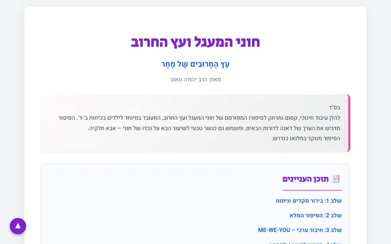
חוני המעגל ועץ החרוב
עֵץ הֶחָרוּבִים שֶׁל מָחָר חוני המעגל ועץ החרוב עֵץ הֶחָרוּבִים שֶׁל מָחָר מאת: הרב יהודה טאוב בס"ד להלן עיבוד…
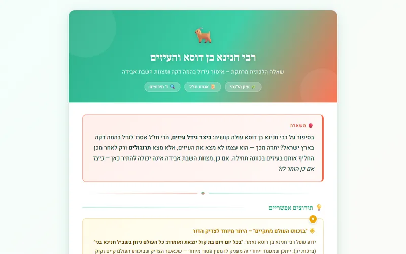
חנינא בן דוסא והעיזים
שאלה הלכתית 🐐 רבי חנינא בן דוסא והעיזים שאלה הלכתית מרתקת – איסור גידול בהמה דקה ומצוות השבת אבידה 🌿 עיון הלכת…
משחקים על פרשיות השבוע
בראשית - פרשת השבוע באתר רבני בתי ספר תושב"ע ותושב"כ פרשת שבוע חומר כללי פ"ש בראשית שמות ויקרא במדבר דברים תנ"…
סיפורים במצגת – דניאל
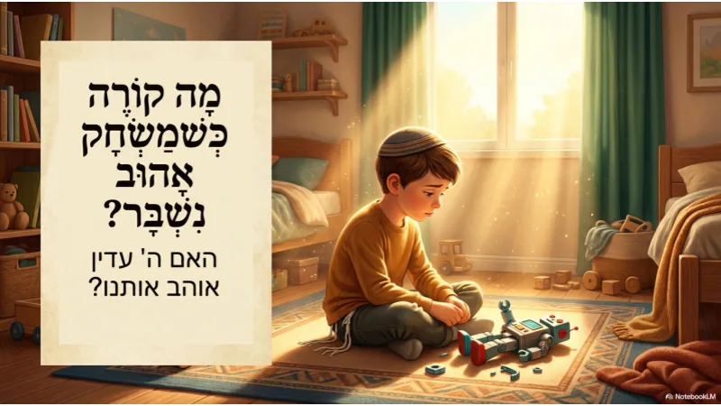
נחום איש גם זו
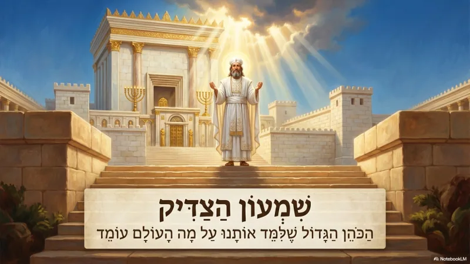
שמעון הצדיק
נקדימון בן גוריון
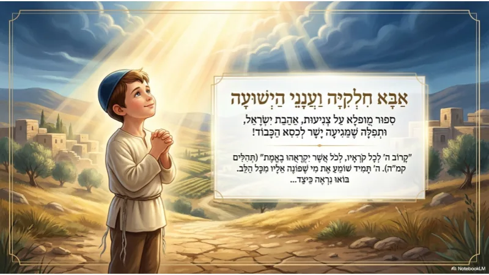
אבא חלקיה וענני הישועה
כיצד למצוא חומרים על התנאים
מדריך למורה — מציאת חומרים על גדולי הדורות 📚 מדריך למורה מציאת חומרים על גדולי הדורות מבוסס על הדרכה מעשית — ק…
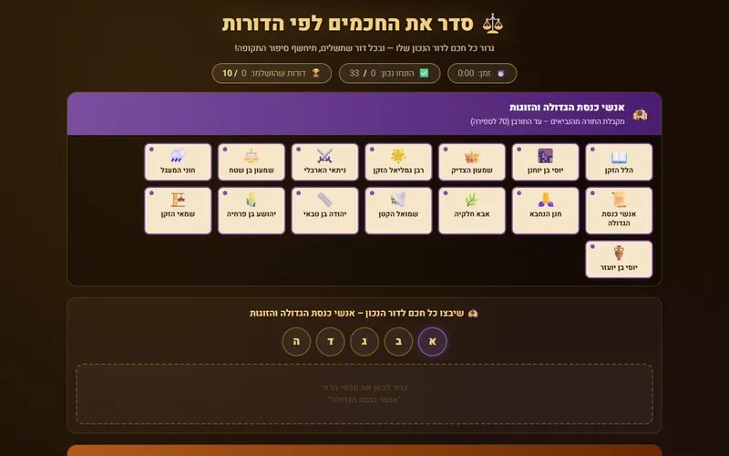
הכר את זמן התנא
סדר את החכמים לפי הדורות ⚖️ סדר את החכמים לפי הדורות גרור כל חכם לדור הנכון שלו — ובכל דור שתשלים, תיחשף סיפור…
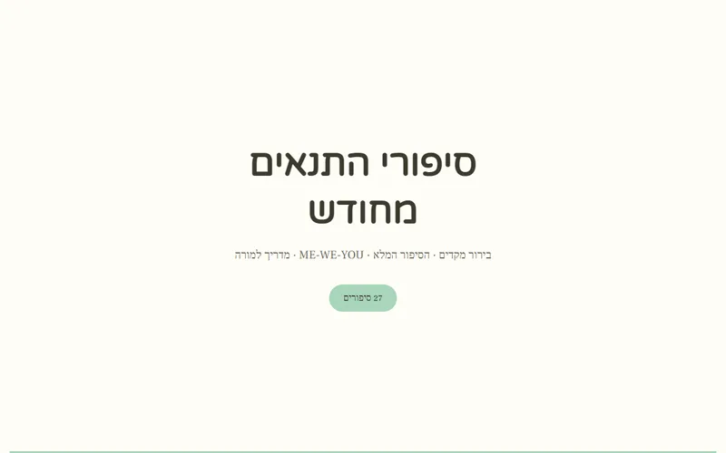
סיפורי התנאים כתובים
ח"א - גדולי ישראל - כל הסיפורים במלואם
גדולי ישראל חלק ב - עם קטלוג
כולל כל הסיפורים כתובים וערוכים
ר' יוחנן בן זכאי
חנינא בן דוסא והנר
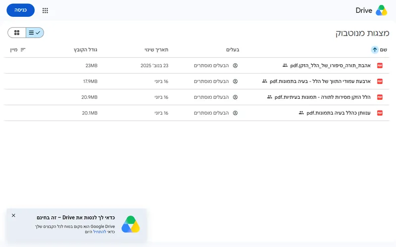
מצגת על הסיפור עם הארובה
הסיפור על הכעס
ארבע גואלים וארבע מצוות
פורים – ארבעה יסודות 1 / 7 🎭 ארבעת יסודות הפורים לפי שיעורי הרב יצחק גינזבורג שליט"א י ה ו ה 📜 ארבע מצוות פורי…
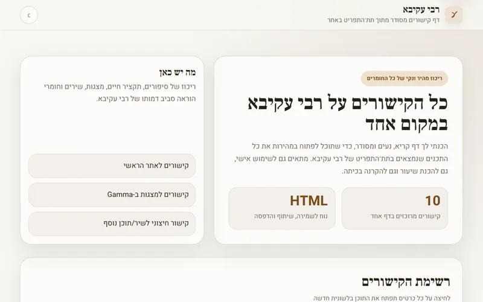
רבי עקיבא – מפתח הסיפורים
קישורי רבי עקיבא דלג לתוכן רבי עקיבא דף קישורים מסודר מתוך תת־התפריט באתר ◐ ריכוז מהיר ונקי של כל החומרים כל ה…
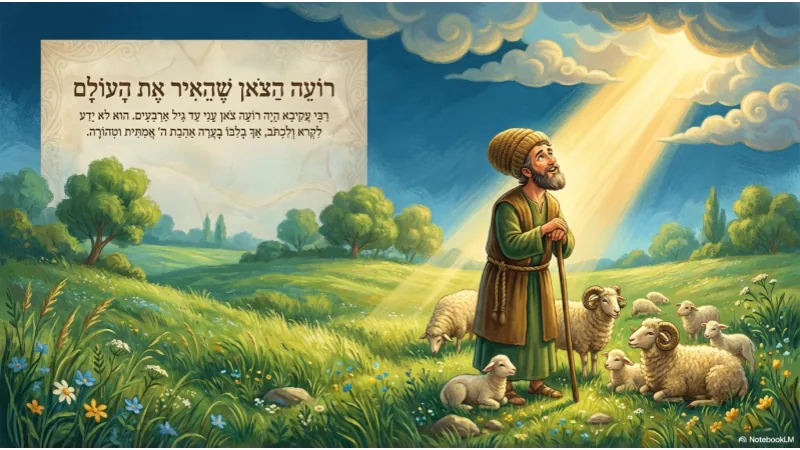
קורות חייו בקצרה
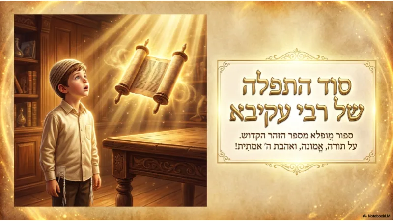
סוד התפילה של רבי עקיבא
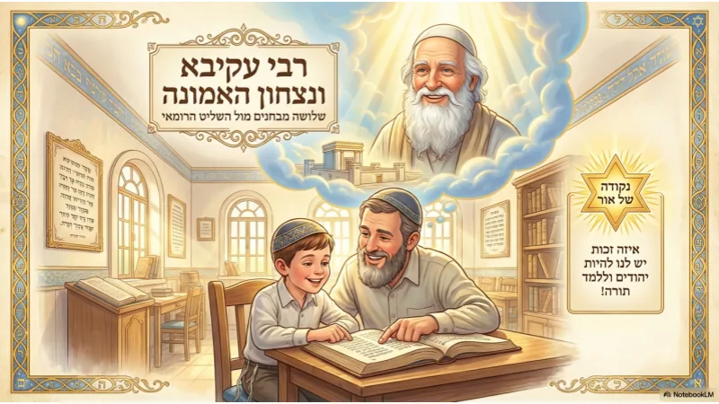
רבי עקיבא מול השליט הרומאי
"רבי עקיבא והאבן הקשה" - מצגת לכיתות א'-ב'
רבי עקיבא וכוח הלימוד - מן האבן והמים לגדלות התורה
הוֹלֵךְ בְּדַרְכּוֹ עֲקִיבָא - שִׁיר עַל רַבִּי עֲקִיבָא וְחָכְמָתוֹ
סיפורי רבי עקיבא
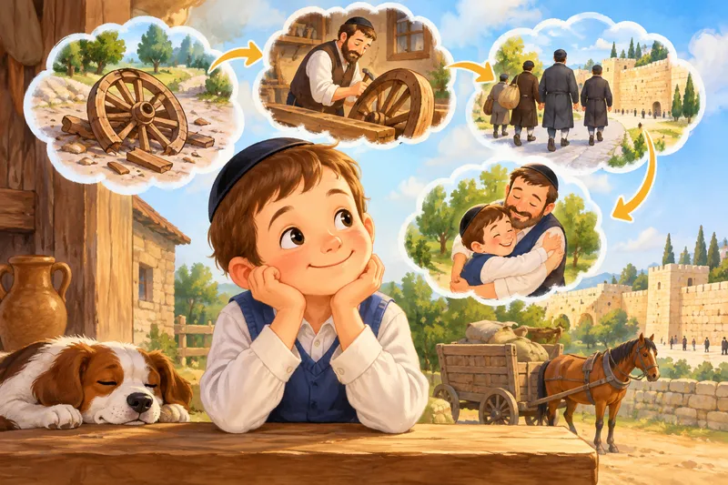
מצגת עבודה לכיתה א על הסיפור הכל לטובה
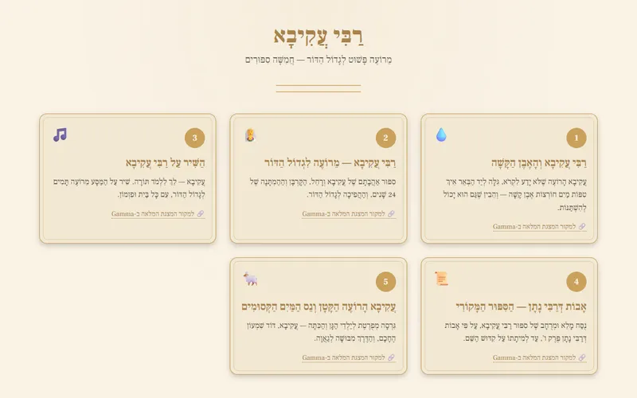
מפתח מצגות על רבי עקיבא
רבי עקיבא - ספר דיגיטלי רַבִּי עֲקִיבָא מֵרוֹעֶה פָּשׁוּט לְגָדוֹל הַדּוֹר — חֲמִשָּׁה סִפּוּרִים ⟵ חזרה לדף ה…
יהושע בן חנניה – מצגת על חייו
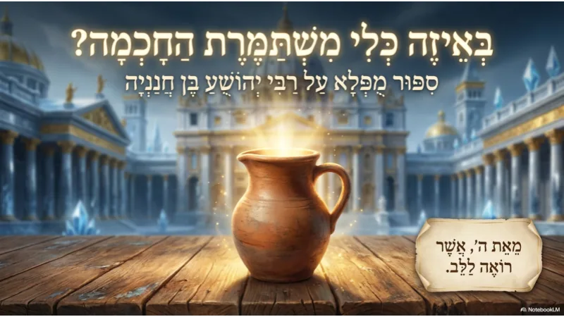
החכמה שנשמרת בכד חרס
שרצו לבנות מקדש
תנורו של עכנאי
סוד כלי החרס והדרך הקצרה
יהושע בן חנניה – השיעור בכיתה
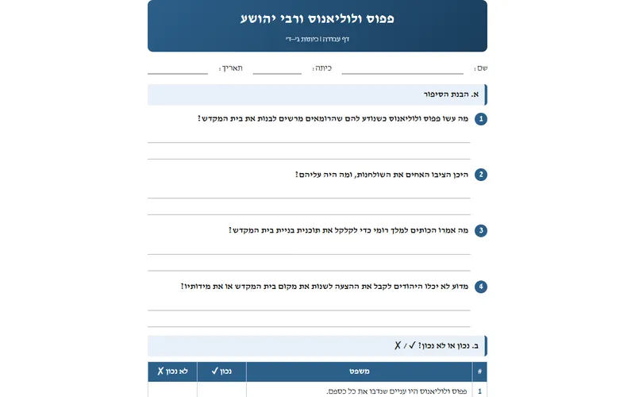
דף עבודה – פפוס ולוליאנוס וחכמת רבי יהושע
פפוס ולוליאנוס ורבי יהושע דף עבודה | כיתות ג'–ד' שם: כיתה: תאריך: א. הבנת הסיפור 1 מה עשו פפוס ולוליאנוס כשנוד…
יהושע בן חנניה – מדריך למורה להוראה
מדריך למורה – רבי יהושע בן חנניה 📖 מדריך למורה | פרקי אבות רבי יהושע בן חנניה מדריך הוראה מקיף לשיעור על תלמיד…
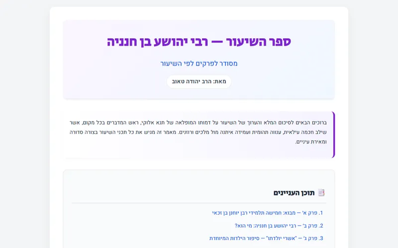
יהושע בן חנניה – סיכום שיעור שלי
ספר השיעור — רבי יהושע בן חנניה: עומק חכמתו, מידותיו וכיסופיו לבית המקדש ספר השיעור — רבי יהושע בן חנניה מסודר…
העונש על תנורו של עכנאי
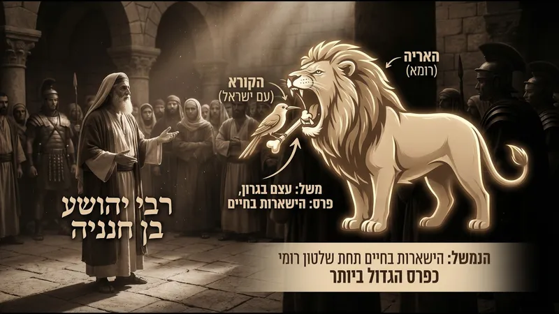
שיעור על הסיפור של בנית המקדש ומשל האריה
תנורו של עכנאי
קניין התורה 📜 🌿 💧 🔥 תנורו של עכנאי הסיפור המדהים על קניין התורה 📖 תורה שבעל פה 🌳 החרוב הנעקר 💧 אמת המים 🏛️ כות…
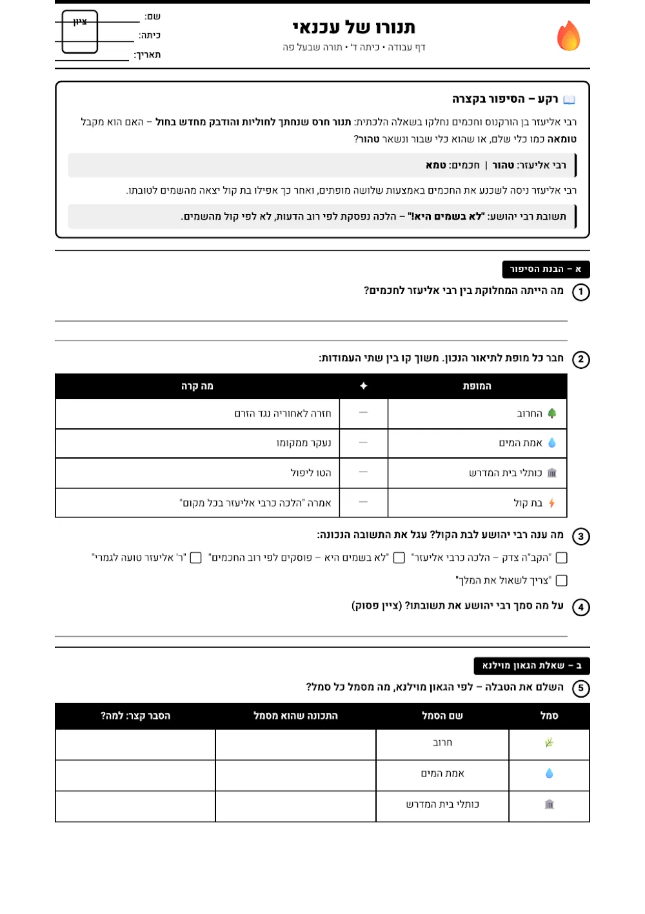
תנורו של עכנאי – דף עבודה
שיעור על תנורו של עכנאי
📘 ספר השיעור – סיפורי הגמרא 📜 ספר השיעור — סיפורי הגמרא השיעור עסק בחמשת הסיפורים המפורסמים ביותר בגמרא. אסונו…
אליעזר בן הורקנוס – סיכום שיעור שלי
ספר השיעור — סיפורו המופלא של רבי אליעזר בן הורקנוס: מכאב הבכי לפיסגת התורה ספר השיעור — סיפור רבי אליעזר בן ה…
אליעזר בן הורקנוס – דף עבודה
סיפורי צדיקים ואמונה (9)
סיפורי אמונה - מהחטופים מעזה
מחקר מקיף על סיפורי אמונה, חוסן רוחני ותופעות רוחניות בקרב חטופים ששוחררו מרצועת עזה לאחר 7 באוקטובר 2023 מב…
רבי חנינא - והדילמה הגדולה - המפהפך העצום בסיפור
📚 רציתי לראות כיצד הבינה המלאכותית תוכל לערוך סיפור פשוט 🤯✨ לא חלמתי על כאלו הפתעות מהדימות שמחכות לי 📖💎 הבא…
✨ המהר"ל שנולד בשכר כיבוד האב - סיפור על ברכת הדורות ✨
כתב בפלא יועץ ערך כיבוד אב ואם שהמכבד אביו ואמו שברו בעוה"ז שיהיו לו בנים מהוגנים ואף אם לא היה לו שכר אלא ז…
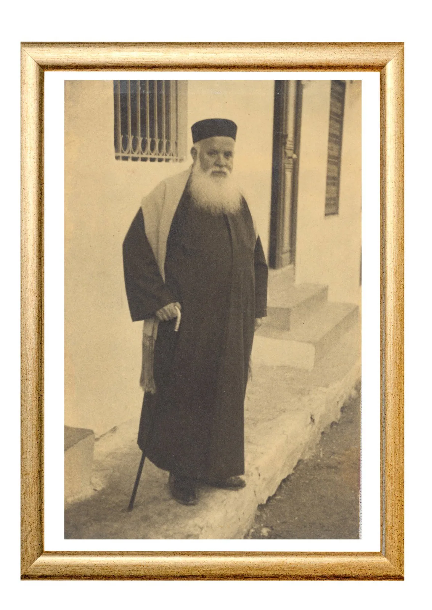
הסיפור על רבי יוסף משאש לחודש אלול - והתשובה
היֹה הָיָה פַּעַם יְהוּדִי וּשְׁמוֹ יְהוֹנָתָן, שֶׁבְּמֶשֶׁךְ זְמַן רַב מַעֲשָׂיו לֹא הָיוּ כָּל כָּךְ טוֹבִ…

הבלש היהודי - החכם - סיפורו של מר זוטרא
זוכרים את הגמרא חברותא מסכת בבא מציעא דף כד עמוד אמר זוטרא חסידא, אגניב ליה כסא דכספא מאושפיזא [נגנב ממנו כו…
שיר יהודים הם בני מלכים - מצגת
מצגת יפה על השיר מילות השיר בצורה יפה מאוד הורד קובץ DOCX • 8901KB מהותו של יום ט"ו באב חומר על חברת יישוב…
סיפורו של רבי עקיבא
לחצו כאן להיכנס למצגת - עם מילות השיר מצגת נוספת על הסיפור - לא מתאים לגמרי למילות השיר מהותו של יום ט"ו בא…
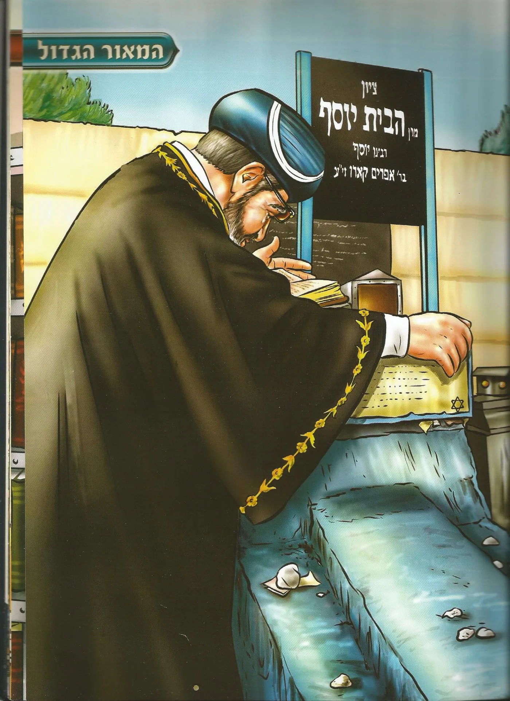
סיפורים על הרב עובדיה יוסף זצ"ל
לחצו כאן להיכנס לתוך המצגת סיפורים על מרן במצגת לילדים סיפורים על הרב עובדיה יוסף זצ"ל חלק א באריכות וכאן נ…

סיפור האמונה של אגם ברגר
דרך אמונה: 481 ימי החוסן הרוחני של אגם ברגר הקדמה: הלוח הלבן וההבטחה ביום ה-30 בינואר 2025, לאחר 481 ימים של ח…
סיפורים במצגת – אמונה וגבורה (13)
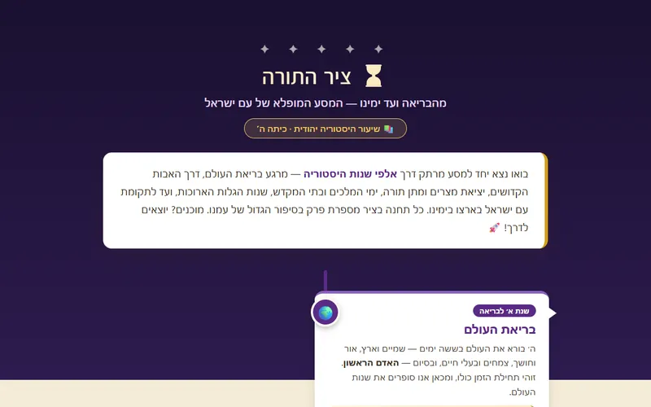
⏳ ציר התורה מהבריאה ועד ימינו — המסע המופלא של עם ישראל
📚 שיעור היסטוריה יהודית · כיתה ה׳ בואו נצא יחד למסע מרתק דרך אלפי שנות היסטוריה — מרגע בריאת העולם, דרך האבות …
כי גבר עלינו חסדו
רבי אריה לוין
סוד החסה
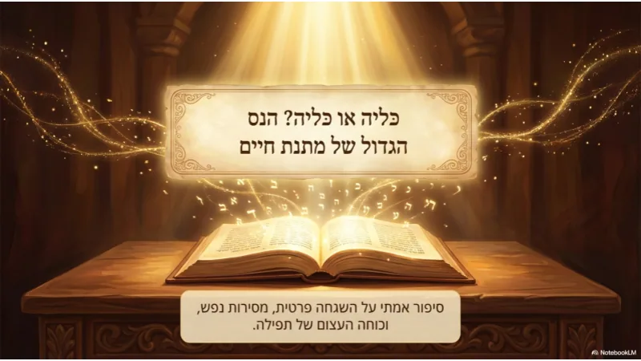
כליה או כליה
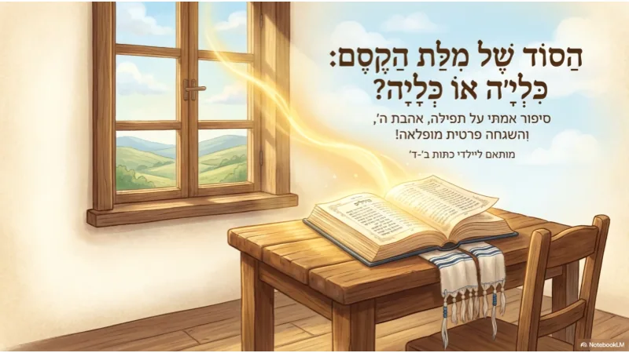
כליה או כליה - מעולה!
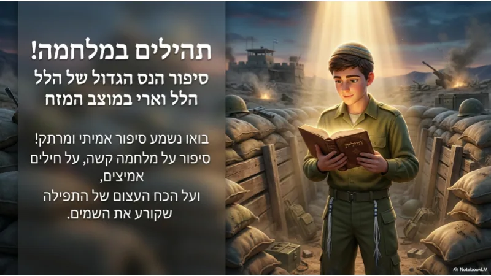
תהלים במלחמה! סיפור הגדול של הלל במוצב המזח
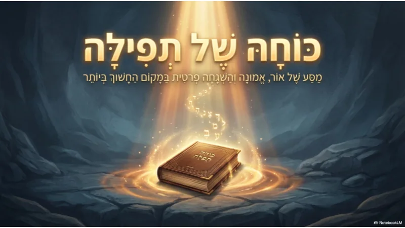
אגם ברגר
כוחה של שירה
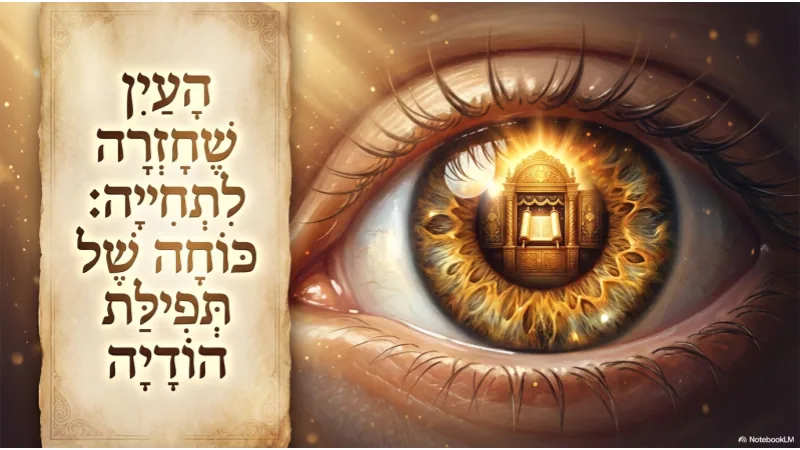
העין שחזרה לתחיה
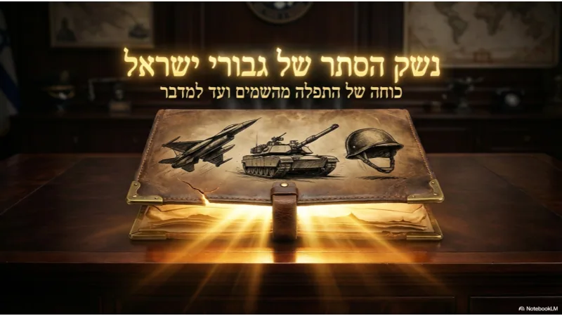
הנשק של הגיבורים
הסיפורים במלואם מעוצב
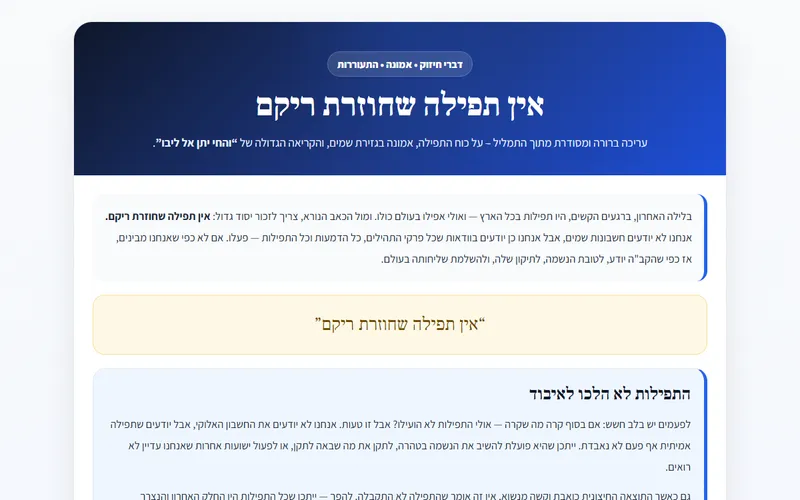
דברים מהסבא של גפן אדרי
אין תפילה שחוזרת ריקם דברי חיזוק • אמונה • התעוררות אין תפילה שחוזרת ריקם עריכה ברורה ומסודרת מתוך התמליל – על…
ספרי סיפורים – גדולי ישראל והתנאים (4)
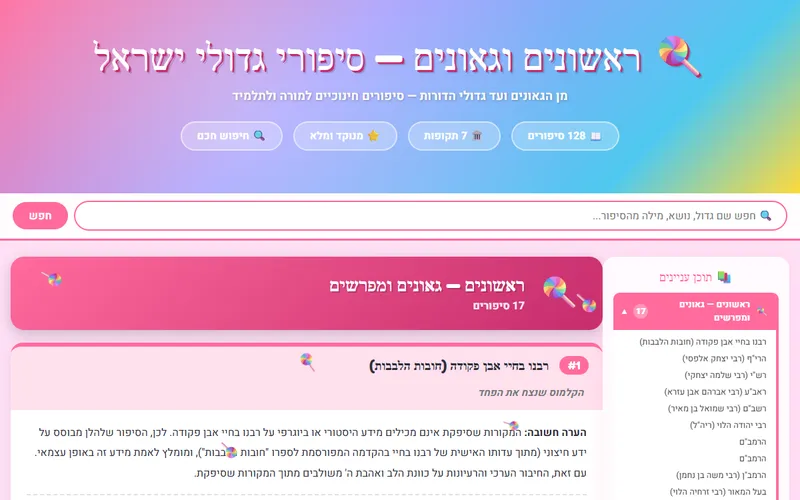
ראשונים וגאונים – סיפורי גדולי ישראל
סיפורים חינוכיים מן הגאונים ועד גדולי הדורות
סיפורי גדולי ישראל – הרמב״ם ועוד
סיפורי הראשונים והאחרונים
סיפורי גדולי ישראל – רבנו חננאל ועוד
סיפורי ראשונים ואחרונים
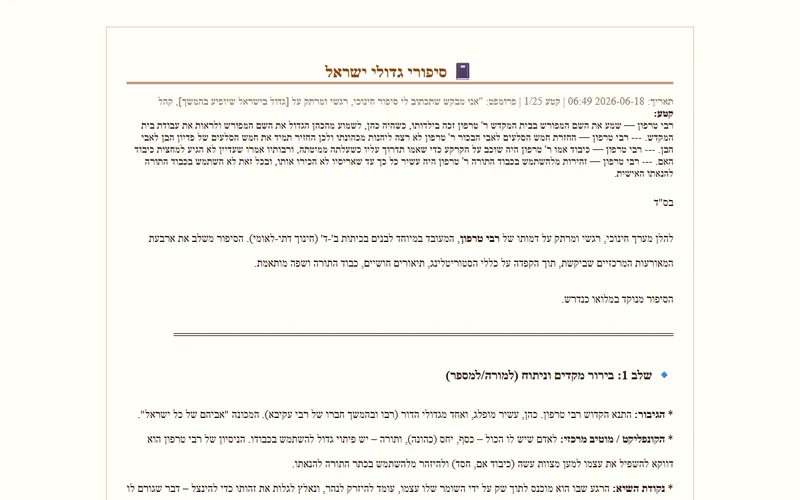
סיפורי גדולי ישראל
סיפורים כתובים על גדולי ישראל
שירים ומצגות על גדולי ישראל (9)
יהודים הם בני מלכים
יְהוּדִים בְּנֵי מְלָכִים 👑 ✨ 👑 יְהוּדִים בְּנֵי מְלָכִים שִׁיר יָפֶה לִילָדוֹת כִּתָּה א' כַּמָּה טוֹב לִי כַ…
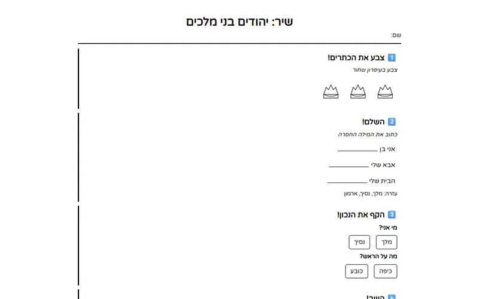
עבודה על השיר יהודים הם בני מלכים
עבודה על השיר - יהודים בני מלכים שיר: יהודים בני מלכים שם: 1️⃣ צבע את הכתרים! צבע בעיפרון שחור 2️⃣ השלם! כתוב …
אוֹדֶה לְךָ ה'
שִׁיר הוֹדָיָה 💙 ✨ 🌟 ✨ 💙 אוֹדֶה לְךָ ה' שִׁיר הוֹדָיָה יָפֶה לִילָדֵי כִּתָּה א' 🙌 אוֹדֶה לְךָ ה', עַל שְׁתֵּי…
אוֹדֶה לְךָ ה' - מצגת עם תמונות
Sign in to continue to Google Drive Forgot email? Not your computer? Use a private browsing window to sign in.…
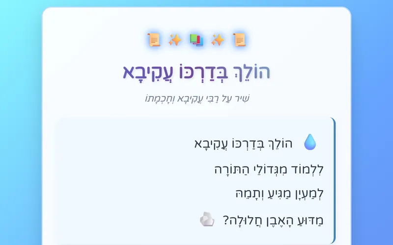
הוֹלֵךְ בְּדַרְכּוֹ עֲקִיבָא
📜 ✨ 📚 ✨ 📜 הוֹלֵךְ בְּדַרְכּוֹ עֲקִיבָא שִׁיר עַל רַבִּי עֲקִיבָא וְחָכְמָתוֹ 💧 הוֹלֵךְ בְּדַרְכּוֹ עֲקִיבָא לִ…
הולך בדרכו עקיבא - מצגת עם תמונות
מפתח שירים - הכל לטובה והמזוזה
שיר המזוזה עם תמונות
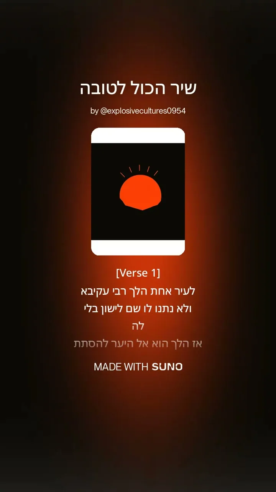
שיר הכל לטובה
מדריך למורה – איך מספרים סיפור (4)
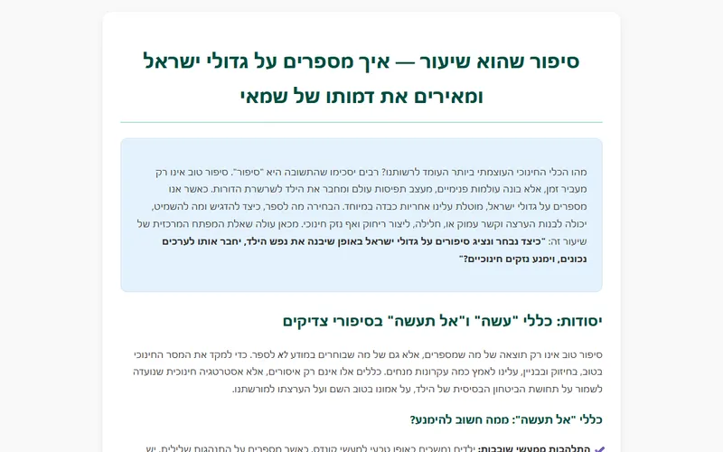
איך לספר על שמאי?
סיפור שהוא שיעור: איך מספרים על גדולי ישראל סיפור שהוא שיעור — איך מספרים על גדולי ישראל ומאירים את דמותו של ש…
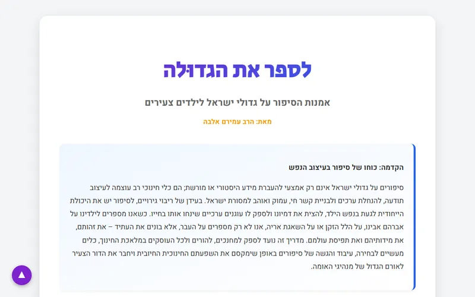
אמנות הסיפור - על גדולי ישראל לילדים צעירים
לספר את הגדוּלה - מדריך פדגוגי לספר את הגדוּלה אמנות הסיפור על גדולי ישראל לילדים צעירים מאת: הרב עמירם אלבה ה…
תוכנית שנתית לכיתה א
סילבוס | הכרת התנאים | כיתות א–ג ✦ ✦ ✦ תוכנית לימודים לכיתות א–ג ✦ הכרת גדולי ישראל תנאים ואמוראים · חכמינו זכ…
מבדק בסוף שנה - מה זוכרים
דף חזרה – סיפורי התנאים דף חזרה — סיפורי התנאים הכרת גדולי ישראל · כיתות א–ג · ל"ב שיעורים שם: כיתה: תאריך: ✦ …
תולדות אדם – ביוגרפיות וכתיבתן (25)

מחקר – תולדות אדם
מחקר
ניתוח ביוגרפי: הרב אליהו רוטנברג זצ"ל
האיש שבנה עולם של תורה מאת: הרב יהודה טאוב הצומת שבין מסלול חייו הייחודי של הרב אליהו רוטנברג זצ"ל לבין הוואקו…
הרב רוטנברג
האיש שבנה עולם | הרב אליהו רוטנברג זצ"ל האיש שבנה עולם סיפור חייו ומורשתו של הרב אליהו רוטנברג זצ"ל מאת: הרב י…
הרב יואל שוורץ
זצ"ל החלוץ שלפני המחנה סיפור חייו ומורשתו של הרב יואל שוורץ זצ"ל מאת: הרב יהודה טאוב פרק פתיחה: האיש שידע ולא …
הרב מאיר שפריר
ז"ל זה ספר תולדות אדם ביוגרפיה של הרב מאיר שפריר ז"ל מאת: הרב יהודה טאוב פתיחה: "זֶה סֵפֶר תּוֹלְדֹת אָדָם" הפ…
תורת חיים: סיפורו של נתנאל טאוב ז"ל
תורת חיים סיפורו של נתנאל טאוב ז"ל מאת: הרב יהודה טאוב הקדמה: שירת הנפש בערב ראש השנה ערב ראש השנה האחרון לחיי…
עטרת משה: ממאקווא שבהונגריה לקרית אתא
▲ עטרת משה: ממאקווא שבהונגריה לקרית אתא סיפור של הנהגה, חורבן ותקומה מאת: הרב יהודה טאוב, קרית אתא 📖 פתח דבר: …
נגד כל הסיכויים: סיפור המאבק שהוליד את נעם
▲ נגד כל הסיכויים סיפור המאבק, האמונה ומסירות הנפש שהוליד את בית הספר "נעם" מאת: הרב יהודה טאוב הניצוץ שהצית א…
ה ספר תולדות נעם | ביוגרפיה של מאבק ומסירות נפש
זה ספר תולדות נעם ביוגרפיה של מאבק ומסירות נפש על טהרת החינוך מאת: הרב יהודה טאוב פתיחה: "זֶה סֵפֶר תּוֹלְדֹת …
סיפור הקמת מאקווא קרית אתא
מהאפר בהונגריה אל הלהבה בקריית אתא: סיפורו של האדמו"ר ממאקווא ▲ מהאפר בהונגריה אל הלהבה בקריית אתא סיפורו הבלת…
סיפורה של משפחת שפרבר
שרשרת של אמונה סיפורה של משפחת שפרבר מאת: הרב יהודה טאוב פרולוג: ערב החורבן התוף הולם. תחילה במרחק, ואז מתקרב,…
הרב גבריאל דנק ז"ל
הנשימה האחרונה, הספר הפתוח סיפורו הבלתי נשכח של הרב גבריאל דנק ז"ל מאת: הרב יהודה טאוב מבוא: הרגע שבו הזמן עצר…
סבתא רחל טאוב
הילדה שהביאה את האור | סיפורה של סבתא רחל הילדה שהביאה את האור סיפורה של סבתא רחל מאת: הרב יהודה טאוב ירושלים …
הרב גפן - קרית אתא
הדרשה האחרונה של הארי מכפר אתא ▲ הדרשה האחרונה של הארי מכפר אתא סיפור חייו, גבורתו ומותו הטרגי של רבי יהודה אר…
המייסד של כפר אתא
תעלומת המייסד הנשכח של כפר אתא ▲ תעלומת המייסד הנשכח של כפר אתא מי היה האיש הזה, ואיזה סוד הוא לקח איתו אל הצל…
הרב יהודה פולק
בנימין אסולין
אור בנימין - אור טהור ונאור 💡 אוֹר בִּנְיָמִין אוֹר טָהוֹר וְנָאוֹר מֵעֹז הָרוּחַ, מֵחֶסֶד וּמֵאֱמוּנָה שִׁיר …
כתיבת תולדות הורים | חקירה פסיכולוגית וביוגרפית
כתיבת תולדות הורים חקירה פסיכולוגית, נרטיבית וביוגרפית מאת: הרב יהודה טאוב 1. הגדרות יסוד: סיפור, זהות ומורשת …
המצווה לכתוב ספר על נפטרים
זה ספר תולדות אדם | הרב יהודה טאוב זה ספר תולדות אדם מדוע וכיצד נכתוב את סיפור חייהם של הורינו מאת: הרב יהודה …
כיצד לכתוב ביוגרפיה
על נפטר באמת וביושר מאת: הרב יהודה טאוב מבוא: "זה ספר תולדות אדם" – מהותה של הביוגרפיה על פי התורה כתיבת תולדו…
כתיבת תולדות ההורים: חובה, משמעות והדרכה
כתיבת תולדות ההורים חובה, משמעות והדרכה מאת: הרב יהודה טאוב כדי לקיים דיון מעמיק ושיטתי בנושא כה רגיש ורב-ממדי…
חשיבות כתיבת תולדות הוריו
כתיבת תולדות הורים | חשיבות ומשמעות כתיבת תולדות הוריו של אדם חשיבות וקשר למצוות ההספד מאת: הרב יהודה טאוב א. …
חשיבות כתיבת תולדות ההורים בראי המקורות
חקירה מקיפה: חשיבות כתיבת תולדות ההורים בראי המקורות מסמך יסוד להבנת הערך הרוחני והחינוכי שבתיעוד המשפחתי מאת:…
אמנות הכתיבה: ביוגרפיה על נפטר
אמת, יושר וגבולות המוסר מאת: הרב יהודה טאוב פרק I: מבוא – הביוגרפיה של המת כ'חסד של אמת' 1.1. הגדרה פילוסופית …
כוחו ומעלתו של ההספד
כוחו של ההספד | חקירה מקיפה על פי המקורות כוחו של ההספד: חקירה מקיפה מדוע יש מצווה גדולה להספיד אדם לאחר מותו?…
קטלוגי סיפורים (13)
סיפורים במצגת – קטלוג
קטלוג סיפורים במצגת כל הקישורים למדור סיפורי התנאים – ממוינים ומאורגנים הכל אוספים תנאים סיפורים נוספים משחקים…
קטלוג 55 מצגות
סיפורי התנאים 📜 יש גם: 60 מצגות אינטראקטיביות לכיתה — עם מדריך למורה אוסף נלווה שמציג את מלוא 60 סיפורי הצדיקי…
קטלוג 92 מצגות תנאים בגמה
קטלוג התנאים אוצר סיפורי התנאים מגדולי התנאים קטלוג מלא, לפי סדר הבנייה, של כל המצגות שהוכנו על פי סיפורי אתר …
קטלוג סיפורי התנאים
סיפורי התנאים 📖 מאות הסיפורים בשלימותם לקריאה — ללא מצגות ↗ 🎬 סרטון הדרכה: פתיחת המצגת במסך מלא ↗ סיפורי התנאי…
קטלוג 157 הסיפורים
157 הסיפורים בקטלוג — לפי דור ותנא 157 הסיפורים בקטלוג לפי דור ותנא — אוצר סיפורי חכמי המשנה והתלמוד ✦ מפתח מל…
קטלוג תוכנית לכיתה א
סילבוס | הכרת התנאים | כיתות א–ג ✦ ✦ ✦ תוכנית לימודים לכיתות א–ג ✦ הכרת גדולי ישראל תנאים ואמוראים · חכמינו זכ…
קטלוג תוכנית חלק ב
גדולי ישראל – חלק ב׳ | ספר סיפורים 🌊 📖 גדולי ישראל – חלק ב׳ ספר סיפורים חינוכי לכיתות ב׳–ד׳ | חינוך דתי-לאומי …
התנאים - לפי סדר הדורות
גדולי ישראל – לפי סדר הדורות 👑 גדולי ישראל לפי סדר הדורות 📄 1951 קבצים 👤 48 גדולים 📅 26/02/2026 ⚖️ אנשי כנסת ה…
גדולי ישראל — מכל הדורות
🕍 גדולי ישראל — קטלוג מפורט 🕍 גדולי ישראל — קטלוג מפורט 32 צדיקים ואישים | לחץ 📂 לפתיחת כל הקבצים בתיקייה 👤 צד…
מפתח לסיפורי התנאים - א
גדולי ישראל - טבלת תנאים ואמוראים מלאה 📚 גדולי ישראל - תנאים ואמוראים 📚 טבלה מסודרת לפי אישיות | כל חכם עם כל …
מפתח לסיפורי התנאים - ב
גדולי ישראל - טבלת תנאים ואמוראים מלאה 📚 גדולי ישראל - טבלת תנאים ואמוראים 📚 כל החכמים עם כל סיפוריהם | מסודר …
גדולי ישראל – דף הבית והמפתח
גדולי ישראל - סיפורים גדולי ישראל – סיפורים 📚 ספריית תוכן דיגיטלית גדולי ישראל סיפורים מסע אל חיי חכמי ישראל ל…
קטלוג ספרית גדולי ישראל
קטלוג גדולי ישראל 📜 גדולי ישראל ספריית חומרי לימוד — חכמי ישראל לדורותיהם 28 קטגוריות עדכון 25.02.2026 תאריך ע…